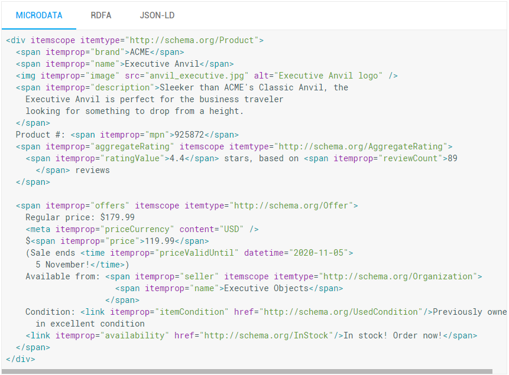

Rich snippets, albo fragmenty rozszerzone – mówi ci to coś? Powinno, zwłaszcza jeśli chcesz zwiększyć zainteresowanie swoją ofertą w najważniejszej wyszukiwarce.
Wyobraź sobie, że zamierzasz kupić nowy komputer, jednak wciąż nie wiesz jaki model będzie dla ciebie najbardziej odpowiedni oraz chciałbyś przekonać się o tym, jak duży budżet musisz przeznaczyć na ten zakup. Jaki będzie twój pierwszy krok? Nie zaryzykuję dużo obstawiając, że na samym początku skorzystasz z wyszukiwarki Google. W zależności od kategorii produktu, około 85%-95% kupujących korzysta z wyszukiwarek, by dowiedzieć się czegoś więcej na temat poszukiwanego przedmiotu. W takim wypadku warto zatroszczyć się o to, by nasza oferta jak najlepiej prezentowała się w wynikach wyszukiwania – pewnie wiele razy słyszałeś o tym, jak wielkie znaczenie ma tytuł czy opis produktu. Tym razem skupimy się jednak na czymś innym, o czym mogłeś do tej pory nie wiedzieć, a co da ci dużą szansę na to, by zdobyć przewagę konkurencyjną. Na danych strukturalnych (structured data).
Punktem wyjścia do zrozumienia czym są dane strukturalne jest poznanie, do czego one służą. Google wykorzystuje tzw. roboty, które mają za zadanie przeglądanie treści stron i indeksowanie ich – wszystko po to, by pozycje, jakie pojawiają się w wynikach były aktualne i jak najlepiej odpowiadały na zapytanie użytkownika. I choć roboty wykonują kawał dobrej roboty, wciąż są to tylko maszyny, którym trzeba pomóc w zrozumieniu treści. I tutaj właśnie pojawiają się dane strukturalne. Są to znaczniki wykorzystywane w kodzie strony po to, by w uporządkowany sposób opisać opublikowane na niej informacje. Przykładowo, w przypadku sklepu internetowego możesz wyróżnić cenę czy stan dostępności produktu. Korzyści są wielostronne – na podstawie ustrukturyzowanych danych wyszukiwarka potrafi ocenić jakie strony będą najbardziej wartościowe dla użytkownika, dzięki czemu dostaje on najlepszą możliwą odpowiedź na swoje pytanie. Z kolei właściciel strony może skorzystać dzięki podwyższeniu współczynnika klikalności i obniżeniu współczynnika odrzuceń, ponieważ osoby klikające w link mają lepsze pojęcie o zawartości witryny, zanim jeszcze zdecydują się ją odwiedzić. Dla zobrazowania tego przykładu zobacz, jak za pomocą fragmentów rozszerzonych (elementów znajdujących się pod tytułem strony) został zaprezentowany w wyszukiwarce Google produkt ze sklepu The Bushy Beard:

Jednym z najpopularniejszych zastosowań ustrukturyzowanych danych są fragmenty rozszerzone dla produktów. Jeśli sprzedajesz w internecie, możesz przekazać Google informacje na temat twojej aktualnej oferty i tym samym przyciągnąć potencjalnych klientów szukających produktów w wyszukiwarce. Wymaganym minimum jest oznaczenie na karcie produktu takich informacji, jak: nazwa (name), cena (price) oraz waluta (priceCurrency). Ponadto, możesz wykorzystać takie znaczniki, jak: obraz (image), opis (description), dostępność (availability), opinia (review) i ocena (aggregateRating). Istnieje kilka różnych możliwości zapisu tych danych: microdata, RDFA oraz JSON-LD.

Wygląda skomplikowanie? Jeśli posiadasz sklep internetowy na platformie Shoper nie musisz martwić się o techniczne aspekty wdrażania powyższych znaczników, ponieważ są one domyślnie wbudowane w kod twojego sklepu. Fragmenty rozszerzone w Shoper nie wymagają aktywacji, a jedyne co powinieneś zrobić, by wykorzystać je w stu procentach, to aktywować dodawanie opinii. Twój sklep automatycznie przekaże do Google takie informacje, jak: nazwa i opis produktu, cena i waluta, średnia ocena i dodane opinie, producent, stan dostępności oraz menu nawigacyjne (okruszki).
Powinieneś też pamiętać, że Google traktuje wyświetlanie rich snippetów jako przywilej, nie jako prawo przysługujące każdej stronie internetowej. Samo dodanie ich w sklepie nie gwarantuje pojawienia się dodatkowych informacji o produkcie w wynikach wyszukiwania. W pierwszej kolejności Google dokładnie analizuje twoje znaczniki i ocenia, czy będą one przydatne dla użytkowników wyszukiwarki. Ponadto, zaindeksowanie danych przez roboty wyszukiwarki wymaga czasu, dlatego warto uzbroić się w cierpliwość. To, co leży w twojej gestii to jak najlepsze uzupełnienie informacji o produkcie oraz sprawdzenie poprawności działania znaczników. Możesz to zrobić za pomocą narzędzia udostępnionego przez Google – Structured Data Testing Tool.
Wypowiedź eksperta
Fragmenty rozszerzone, które pojawią się w wynikach wyszukiwania zostaną umieszczone w nowym, dodatkowym wierszu. Klasyczny wynik wyszukiwania zawiera wiersz z tytułem, wiersz z adresem URL lub ścieżką nawigacyjną oraz dwa wiersze opisu. Rozszerzony wynik wyszukiwania będzie miał dodatkowy wiersz pomiędzy adresem URL a opisem i może obecnie zawierać samą cenę produktu, cenę produktu i stan magazynowy, średnią z ocen i liczbę opinii lub wszystkie te informacje jednocześnie.
Sposób interpretacji dodatkowych danych strukturalnych zmieniał się w czasie. To znaczy, że gdy w sklepie internetowym zainstalowano fragmenty rozszerzone w formacie mikrodanych, który na początku był udostępniony przez Google, obecnie w pewnej części mógł przestać działać. Kiedyś jednym z parametrów definiujących dane strukturalne w produkcie był parametr “quantity”. Obecnie to parametr nie wspierany przez Google i jego dalsza obecność sprawia, że przestaje się wyświetlać cena i dostępność produktu, ponieważ cały kod dotyczący produktu zawiera błąd. Błąd jest widoczny w Narzędziu do testowania danych strukturalnych.
Innym wycofanym parametrem jest “stan” produktu. Kiedyś stan produktu można było oznaczyć jako: nowy, używany, odtworzony. Stan odtworzony z reguły dotyczył sprzętu elektronicznego, który np. był zwrócony do producenta na gwarancji i po naprawie ponownie wprowadzony do obrotu.
Google zastrzega sobie, że informacje oparte o dane strukturalne pojawiają się automatycznie i wyszukiwarka może, ale nie musi z nich skorzystać. Często można zaobserwować sytuację, w której w tym samym sklepie internetowym pewne produkty opatrzone są dodatkowym wierszem w wynikach wyszukiwania, a inne tego dodatkowego wiersza nie posiadają, mimo że dane strukturalne są poprawnie zainstalowane. To wyłącznie decyzja oparta o automatyczny algorytm Google i nikt nie ma na nią wpływu.
Fragment rozszerzony oparty o dane strukturalne, który udaje się uruchomić na stronie z prawie stuprocentową skutecznością to menu nawigacyjne, które informuje gdzie w strukturze katalogowej sklepu znajduje się produkt lub inna strona i jaka ścieżka prowadzi do tego produktu. Już patrząc na wyniki wyszukiwania otrzymujemy informację do jakiej kategorii należy produkt i zyskujemy więcej pewności, jeśli chcielibyśmy ten rezultat wybrać.
(Uniwersytet Ekonomiczny w Katowicach)
jest międzynarodowym ekspertem w zakresie marketingu w wyszukiwarkach. Upowszechnia wiedzę o marketingu w wyszukiwarkach internetowych, a w wolnych chwilach doradza dużym i małym klientom jak prowadzić strony internetowe. Jest twórcą Silesia SEM oraz Festiwalu SEO.
Przekuj teorię w praktykę
Polecane artykuły